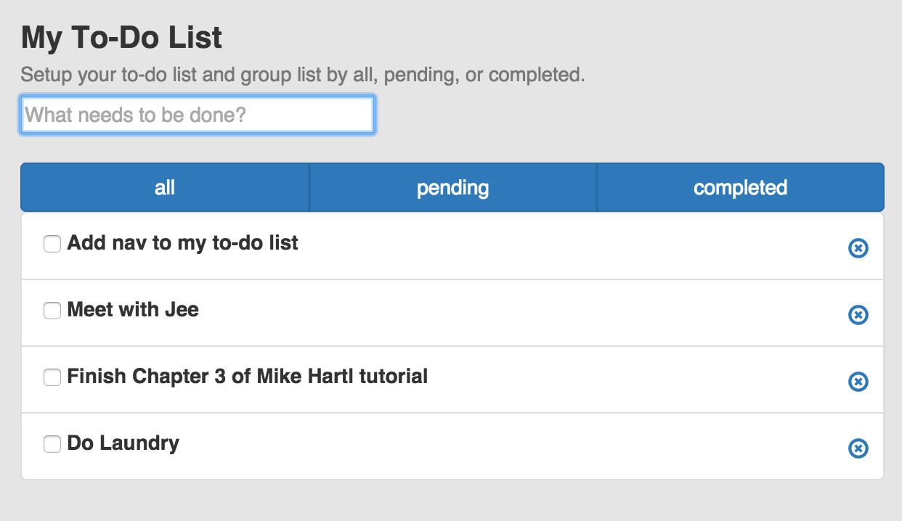

Latest Projects
Blueprint Magazine Site
Blueprint's magazine site built using Wordpress. Modified CMS with custom post types and fields, custom templates and responsive layouts.
Technology: Wordpress, PHP, CSS, Javascript, JQuery, and Git
UCLA Optimists
Completed feature updates on UCLA's Optimist site-Rollover effects with Slider and filter on click of the optimists page.
Technology: JQuery, Isotope (JQuery Plugin), CSS, Sass, Grunt, and Git
Wordpress Practice
Wordpress really is simple to use and to customize. I'm spending time customizing themes, widgets, layouts and functionality.
Technology: Wordpress, PHP, Javascript, and CSS.
YouTube Party
A room where you can search for YouTube videos, add them to the playlist, chat with anyone in the room, and share video playback across the network. Join the room by signing up or loging in with facebook.
Technology:AngularJS, Node, Express, MongoDB, Jade, and YouTube API.
Backbone To-Do List
A single-page application built using jQuery, Backbone, and underscore. The app is built using Bootstrap, HTML5 local storage for saving list items, and URL routes for alternate views of list, all, pending, and completed items.
Sapphire Media Agency
New freelance project using Opencart 2.0, an opensource ecommerce PHP and MVC-L framework supports localization for multiple languages. Site is dynamic and built with modules for CMS integration